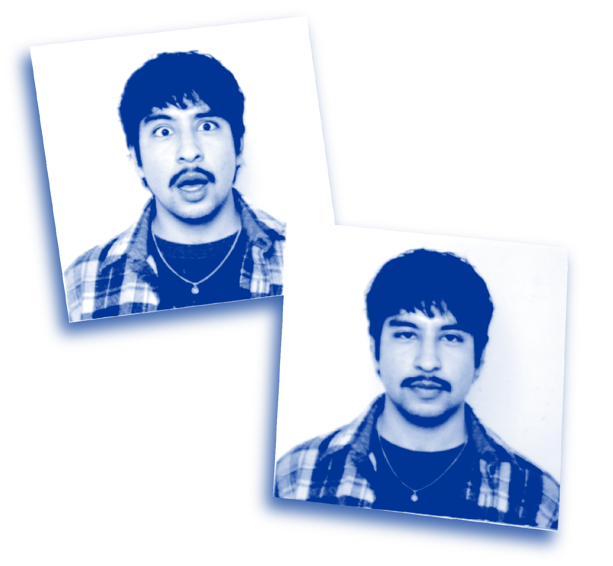

About
Communications, creativity, and genuine connection.

Storytelling with purpose.
I'm Auden Salazar, a digital communications professional working across writing, design, photography, and video.
In creating graphics and identity, strategic positioning, online media, communications, and capturing imagery, I help organizations identify hidden conversations and match the dialogue in real-time.